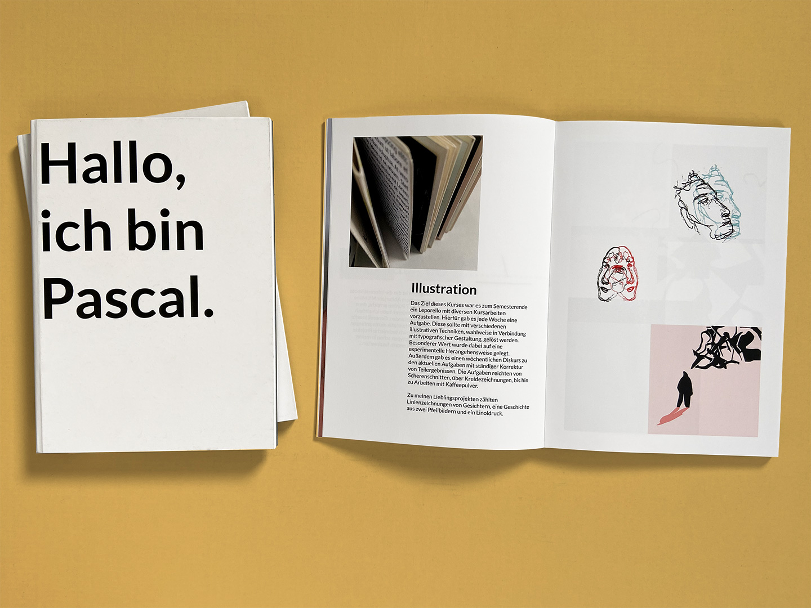
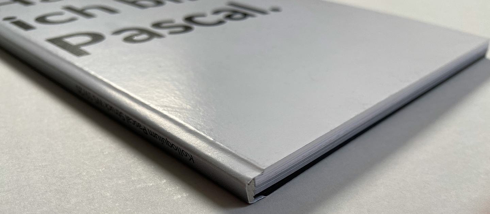

Documentary
This experience in bookmaking was a very interesting one. The goal behind this project was to reflect on my way in design and capture my findings within a book. During the layout process I realized that I want to show my transition to digital Design through more than just text. So an essential part of the book design is the color scheme because with every page the background color gets a little bit darker. This creates a fade which symbolizes the transition from white paper to dark computer screens.


